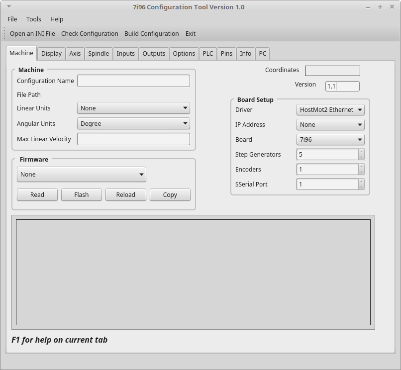

Machine Tab¶
{kind=link}
Machine Group¶
The Machine Group contains overall configuration information for the machine.
Configuration Name can be any combination of letters and digits including the dash, underscore and space. Spaces are replaced with an underscore.
File Path displays the actual path to the configuration
Linear Units select from Imperal inch or Metric mm units
Angular Units default is Degree… nothing else is used at this time.
Max Linear Velocity is the maximum linear velocity of all axes combined in linear units per second. The maximum linear velocity can be higher than the fastest axis to allow all axes to run at their maximum velocity in a combined move.
Firmware Group¶
In Firmware Group you can view and change the 7i96 firmware. Before using the Firmware buttons you must select the IP Address in the Board Setup Group. The 7i76 must be connected to the PC and 5vdc power supplied.
Read Reads the current firmware and displays it in the output window. If sucessful then you have the 7i96 configured and connected correctly.
Flash After selecting the firmware the Flash button will write the new firmware to the 7i96.
Reload After flashing you must either Reload or power cycle the 7i96.
Copy Copies the contents of the output window to the clipboard. Then you can paste the output to a file for later use.
Board Setup Group¶
The Board Setup Group contains options for the 7i96 card.
Driver Default is HostMot2 Ethernet
IP Address Select the IP address configured on the 7i96.
Step Generators For future use
Encoders For future use
SSerial Port For future use
Misc.
Version should be 1.1 or higher, it is used by the LinuxCNC conversion script.
Coordinates displays the coordinates that are configured in the Axis tab.